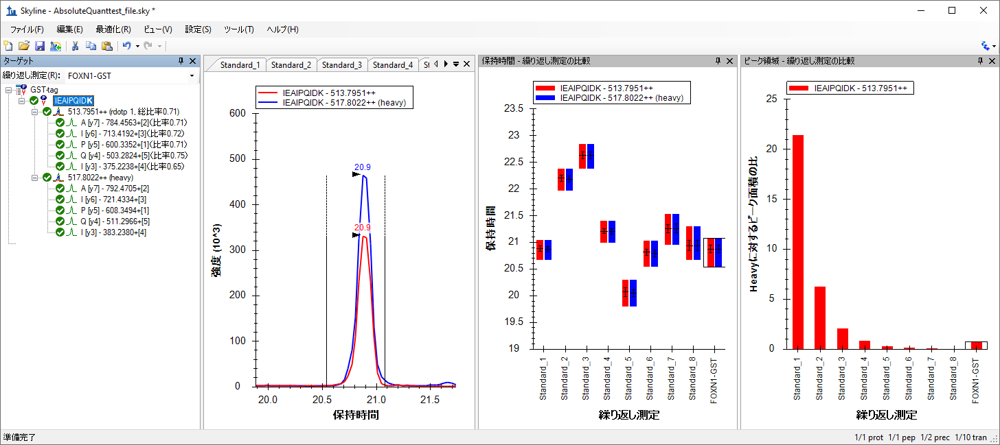

本チュートリアルでは選択イオンモニタリング（SRM: Selected Ion Monitoring）法を使ってターゲット（標的）タンパク質の絶対量を求める方法を紹介します。ここでは安定同位体標識ペプチドを内部標準に用いた外部標準法による校正曲線作成を例に説明します。
ペプチドの絶対存在量測定は、一点か複数点検量のいずれでもできます。単一点内部校正絶対存在量測定は、安定同位体標識したターゲットペプチドを試料に一定量加えて測定します。試料中のターゲットペプチドの絶対量は、標識されていないターゲットペプチドと安定同位体標識されたターゲットペプチドの比率から計算できます1。この手法では標識されていないペプチドと安定同位体標識のペプチドの比率が2の場合、単純に標的ペプチドが試料中に絶対量で安定同位体標識されたペプチドの2倍量存在するということになります。これはペプチド応答の勾配が1ということになります。さらに、単一点内部校正を使用するこのアプローチは、ライトペプチドもヘビーペプチドも質量分析検出器の線形範囲であるという仮定のもとに成り立っています。しかしながら、この仮定は常に正しいわけではなく非線形の可能性もあります2,3,4,5。
一方、複数の濃度で校正曲線を作成する場合は、校正曲線の勾配が1ではない場合にも適用できます。この方法では、複数の異なる濃度の標準ペプチドを用いて校正曲線を作成します。試料内のペプチド信号強度から試料内のターゲットペプチドの濃度を計算します3。ただし、この方法は校正曲線を作成するために質量分析計を用いた測定が複数回必要となります。
外部標準法による校正曲線による絶対定量化の精度改善には安定同位体標識されたペプチドを内部標準をして使用するのが一般的です6。ペプチドのイオン強度は、試料調製、オートサンプラーまたはクロマトグラフィー分離のブレなど様々な要素に影響されます。そこでキャリブラントと試料のそれぞれに同じ量の安定同位体標識ペプチドを添加して正規化するだけでなく、キャリブラント対標準、および試料対標準の比率測定をします。この手法を用いる利点は比率が試料調製、オートサンプラー、またはクロマトグラフィーでの分離のブレによる影響を無視できる点です。安定同位体標識されたペプチドを内部標準にしてに外部標準法による校正曲線の作成では、測定で使用する試料を必要最小量にしながらも正確で精度の高い測定が可能となります。
本チュートリアルでは、GSTタグ（チュートリアル図1A）内の「ターゲット（標的）タンパク質に特異的」なペプチドをもとにGSTタグのタンパク質の絶対存在量を測定した（Stergachis et al.7）公開データを使用します。絶対定量化ではまず対象となるタンパク質の定量化に使用できる「ターゲット（標的）タンパク質に特異的」なペプチドを複数見つけることが重要です。例えばペプチドIEAIPQIDKはGSTタグ内の他のトリプシン酵素処理で得られるペプチドと比較して、信号強度も強く、「ターゲット（標的）タンパク質に特異的」であると認識されました（未公開データ）。またこのペプチドは、他のヒトグルタチオン結合タンパク質とは異なり、この住血吸虫GSTタグ特異的です。
この実験で登場するインフレームGSTタグを含むFOXN1タンパク質を、まずIn vitro転写/翻訳で生成し、その後グルタチオン樹脂（チュートリアル図1B）を使用して完全長タンパク質を精製しました。次に安定同位体標識したIEAIPQIDKペプチドを溶出バッファー液に添加、酵素処理をした後、Thermo TSQ Vantage（四重極質量分析計）を用いて選択イオンモニタリング（SRM）で分析しました。97%以上の純度でに精製され、アミノ酸分析で濃度確認済みのさまざまな量の未標識IEAIPQIDKペプチドを使用して外部標準法による校正曲線が作成できます。安定同位体標識のIEAIPQIDKペプチドも、FOXN1-GNT試料と同じ濃度でこれらのキャリブラントに添加しています（チュートリアル図1C）。各試料内の安定同位体標識ペプチドの濃度が同じであれば値（濃度）はいくらであってもかまいませんが、試料内の安定同位体標識ペプチド量はFOXN1-GSTから生じる未標識のペプチドと量的に近いのが望ましいです。またFOXN1-GSTの未標識ペプチドの濃度はキャリブラントを使用して検定した濃度範囲の中央値に近いのが理想です。
チュートリアル図1. 実験概要
(A) 住血吸虫GSTタグタンパク質シークエンス。定量化目的に使用するトリプシンペプチドは赤で示されています。
(B) タグ付きタンパク質の合成、濃縮、消化、分析の図。
(C) モニタした試料と、それぞれにおけるライトおよびヘビーIEAIPQIDKペプチドの存在量。
チュートリアルを始める前に、以下のzipファイルをダウンロードしてください。
https://skyline.ms/tutorials/AbsoluteQuant.zip
この中のファイルを、以下のコンピュータ上のフォルダへ解凍します。
C:\Users\absterga\Documents
これにより新しいフォルダが作成されます。
C:\Users\absterga\Documents\AbsoluteQuant
本チュートリアルを始める前からすでにSkylineを使用している場合は、Skylineをデフォルト設定に戻すことをお勧めします。デフォルト設定に戻すには、以下の操作を行います。

これでSkylineのドキュメント設定がデフォルトにリセットされます。
このチュートリアルはプロテオミクス用なので、以下のようにプロテオミクス用インターフェイスの選択をすることもできます。

Skylineはウィンドウの右上隅のプロテインアイコン  で表示されるプロテオミクスモードで作動しています。
で表示されるプロテオミクスモードで作動しています。
新しい空のドキュメントでSkylineが表示されます。
Skylineにペプチドシークエンスを入力する前にペプチドおよびトランジションの設定が（実験の目的に対して）正しいか確認することが重要です。以下の設定は13C615N2 L-Lysine安定同位体標識（内部標準）ペプチドに対しての設定となります。従って上記とは別の安定同位体標識を使用する場合は、ペプチド設定で適切な同位体修飾をまず選択してください。
フォームは以下のようになります。

| 注：SkylineではIEAIPQIDKのような9アミノ酸ペプチドの場合にyn-1（またはy8）に相当する最後のイオンを選択してください。本実験では「n-1」と混同する可能性を考慮して「最後のイオン–1」を使用しました。 |
[ トランジションの設定 ] フォームは以下のようになります。

[ 同位体修飾を編集 ] フォームは以下のようになります。

[ ペプチド設定 ] フォームは以下のようになります。

実験で安定同位体標識の内部標準ペプチドを使用するため、[ 内部標準タイプ ] ドロップダウンリストはデフォルトの「heavy」のままでかまいません。

上記手順を実施すると、Skylineの画面は以下のようになります。

最初のトランジションリストをエクスポートする前に、まず次の手順でドキュメントをAbsoluteQuantフォルダに保存します。
質量分析計で実験をする場合当然ながら装置メソッドが必要です。Skylineのテンプレートメソッドを装置メソッドへ直接エクスポートすることもできます。ここではトランジションリストをエクスポートします（この作業はあらかじめテンプレートの装置メソッドにインポートしておいてもよいです）。これには、以下の操作を行います。
以下のような [ トランジションリストをエクスポート ] フォームが表示されます。[ トランジション設定 ] – [ 予測 ] タブの [ 衝突エネルギー ] で「Thermo TSQ Vantage」を選択しているので、[ 装置タイプ ] リストには自動的に「Thermo」が選択されています。

また、他の設定もすべてこのターゲットリストに適切であることがわかります。
これでトランジションリストがThermo TSQ Vantage四重極質量分析計テンプレートメソッドファイルにインポートされました。今度は生成されたGST-tag.csvファイルをExcelまたはテキストエディタで開き確認します。
この次のセクションでは、チュートリアル図1Cで示されている9個の試料を使って作業します。.RAWファイルをSkylineにインポートしてデータを表示します。データは、前のセクションで作成し保存したSkylineドキュメントにインポートされます。インポートするファイルは、このチュートリアルのために作成したAbsoluteQuantフォルダに入っており、以下のような名称になっています。
これらのRAWファイルは多くのデータ群に散剤しているものから無作為に収集されたものです。Skylineで処理した結果は原文（http://proteome.gs.washington.edu/supplementary_data/IVT_SRM/Supplementary%20Data%202.sky.zip）のSupplemental Data 2にあります。
FOXN1-GST試料を見る前に、まず標準の理解を深めましょう。
[ 結果をインポート ] フォームは以下のようになります。


すべてのRAWファイルインポートに時間がかかることもあります。
各標準のクロマトグラフピークを確認するために、タイル表示ですべてのクロマトグラムを並べて表示するのが最良です。このレイアウトを表示するには、以下の操作を行います。
以下のように各標準の安定同位体標識（青）と未標識（赤）のクロマトグラムが同時にグラフに表示されるのがわかります。

標準のクロマトグラフトレースを見るときに注目すべきは以下の項目です。
次に上述までの説明と同様FOXN1-GST.RAWファイルを現在のSkylineドキュメントにインポートします。
この試料が正しいことを確認するため、安定同位体標識および未標識ペプチド試料のピーククロマトグラフトレース、フラグメンテーションパターン、保持時間を調べます。以下のようにサマリープロットを表示します。
以下のようにウィンドウを並べてより見やすくします。
これで未標識ペプチドのプリカーサーイオン

または安定同位体標識ペプチドのプリカーサーイオンを選択できます。

以下を確認します。
上記の条件が当てはまらない場合、ピーク選択が間違っている（ピーク同定の問題）、あるいは夾雑物による干渉がある可能性があります。
データを表示するもう1つの方法は以下のやり方です。
ピーク領域グラフに表示される値は校正曲線に使用する値となります。このグラフから、FOXN1-GST試料の未標識と安定同位体標識比率は校正点のおよそ中央にあることが簡単にわかります。この濃度範囲は定量化に最適で理想的です。

このチュートリアルでは、Skylineによる校正曲線作成を紹介します。
[ ペプチド設定 ] フォームは以下のようになります。

| 標準 | 40 |
| 標準 | 12.5 |
| 標準 | 5 |
| 標準 | 2.5 |
| 標準 | 1 |
| 標準 | 0.5 |
| 標準 | 0.25 |
| 標準 | 0.1 |
[ドキュメントグリッド: 繰り返し測定 ] フォームは以下のようになります。

以下のようなグラフが表示されます。

校正曲線線に勾配と切片が表示されています。これを標準のy = m * x + b式と共に使用してピーク領域比と濃度を変換できます。
濃度＝（ピーク領域比―切片）/勾配
選択された（繰り返し測定で計算された）濃度も校正曲線上に表示されます。ここでは試料の濃度が1.8554 fmol/ulと計算されました。
本チュートリアルでは、さまざまな絶対存在量の長所を説明し、安定同位体標識したペプチドを用いた外部標準法校正曲線を使用した絶対存在量の決定方法を実証しました。この手法では試料の内生量が非常に低い場合でも正規化を行い正しい積分範囲を見い出しました。正確で精度の高い絶対量も可能であるため、実際の測定で使用する試料の量も必要最小限に抑えることもできるという大きなメリットがあります。